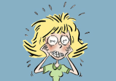

Wat is TF-CBT?
TF-CBT komt uit Amerika. Het staat voor Trauma Focused Cognitive Behavioral Therapy. De behandeling duurt meestal 8 keer. Je leert omgaan met nare gevoelens en hoe je je kunt ontspannen. Alles wat je tijdens de behandeling leert kan je helpen je weer beter te voelen. Je gaat schrijven of tekenen over wat je hebt meegemaakt.
Voor wie is TF-CBT?
Traumagerichte cognitieve gedragstherapie is een behandeling voor kinderen en jongeren tussen de 7 en 18 jaar. Speciaal voor kinderen die problemen hebben gekregen nadat ze iets ingrijpends hebben meegemaakt.
Werkt TF-CBT?
Wetenschappelijk onderzoek wijst uit dat TF-CBT werkt om problemen te verminderen. We hebben al veel kinderen met deze behandeling kunnen helpen. De therapeuten die deze behandeling geven hebben hiervoor een speciale opleiding gedaan.Wat wordt er van jou verwacht?
Je komt één keer per week naar de therapeut. Het is belangrijk dat je de hele behandeling af maakt. Elke sessie is belangrijk. Het is ook belangrijk dat je de opdrachten maakt. Hiervoor krijg je een werkboek.Wat kan je verwachten na de behandeling?
Weet je hoe je rustig kunt worden en blijven als je aan iets naars moet denkenKan je je gevoelens beter herkennen en uiten
Kan je negatieve gedachten herkennen die angst veroorzaken
Heb je geleerd hoe je negatieve gedachten kan vervangen door helpende gedachten
Besef je dat je niet de enige bent die zoiets heeft meegemaakt (en overleefd)
Besef je dat wat er gebeurd is niet jouw schuld is
Kan je met je ouder(s) praten over wat je hebt meegemaakt
Kan je herinneringen aan wat er gebeurt is beter verdragen
Heb je geleerd om beter om te gaan met moeilijke situaties